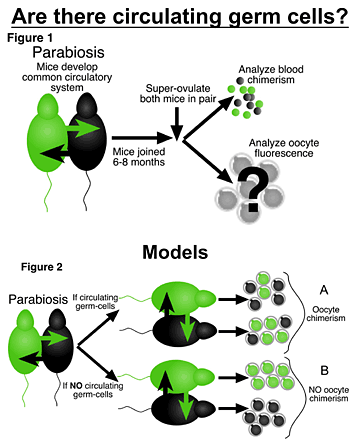

News Archives : 2006 : Mammalian Egg Progenitors Stay Put
by Kevin Eggan and Amy Wagers
July 7, 2006
Two recent reports(2,3) have challenged this dogma. They have suggested that the mouse ovary might have surprising regenerative potential after chemotherapeutic injury and, remarkably, that oocyte production can be maintained through continual seeding of the ovary by circulating, bone marrow-derived germ cells. These observations have important implications for premature infertility in women caused by chemotherapy and suggest that bone marrow transplant might represent an emerging therapy for this condition. At the same time, these claims also have profound repercussions for female bone marrow donors, given the prospect that their bone marrow recipient might give birth to a child genetically related to them.
Due to the important clinical implications of these recent findings as well as our interest in alternative sources of oocytes that might be used for somatic cell nuclear transplantation (SCNT), Amy Wagers and I began a collaboration. Dr. Wagers, a colleague in The Harvard Stem Cell Institute and Assistant Professor at the Joslin Diabetes Center, and I investigated whether circulating cells could give rise to mature, ovulated oocytes that could participate in female reproduction or be used for SCNT. Specifically, we employed both a classical physiological approach termed “parabiosis” as well as bone marrow transplantation strategies to see whether circulating or bone marrow-derived cells could give rise to ovulated eggs. These studies are now complete and have been published in the journal Nature (Eggan, K. et al. Ovulated oocytes in adult mice derive from non-circulating germ cells. Nature 441, 1109-1114 (2006))(4).
|  | |
If, as has been suggested(2,3), circulating germ cells could give rise to oocytes, then, when these parabiotic pairs were induced to ovulate, a mixture of GFP+ and GFP- oocytes would be expected from both partners in the parabiotic pairs (Figure 2a). However, if oocyte progenitors are located in situ in the ovary, then only GFP+ eggs should be retrieved from the transgenic partner mice and only GFP- eggs from non-transgenic partners (Figure 2b).
In several variations on this parabiotic strategy, which included long-term parabiosis and chemotherapeutic damage to the ovary of the non-transgenic animal prior to parabiosis, we always observed that ovulated oocytes had the genotype of the animals and ovary from which they were retrieved. This was in striking contrast to both circulating blood cells and hematopoietic, blood-forming stem cells, which we showed could cross from one animal and engraft in the bone marrow of the other.
Thus, bone marrow transplantation is unlikely to reverse or significantly ameliorate premature menopause or chemotherapy-induced sterility in women. New eggs are unlikely to be, in this sense, bred in the bone. In conclusion, our findings support the prevailing theory(1) that mammalian oocytes are derived predominantly from a fixed pool of postmitotic, non-circulating germ cells that reside within the ovary.
References: